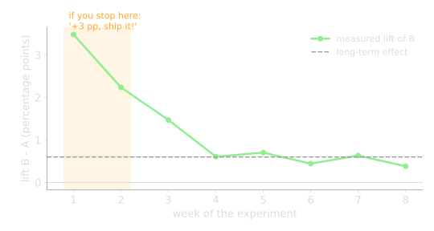
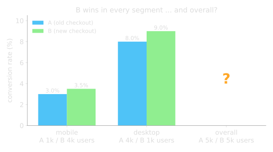
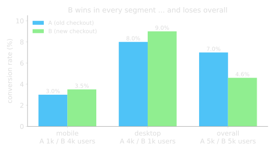

Where are we?
Analysis answers "is the difference real?", Decisions ask "do we ship it?". A/B testing is the bridge between the two.
Where are we in the loop?

Decide: "testing hypotheses" was on this slide on day 1. Today is that box.
Act: ship the new checkout to everyone, or not.
Observe: the shipped version produces new raw data, the loop starts again.
Dashboards (Orient) tell you what changed. Only an experiment tells you whether your change caused it.
Where are we in the course?
(I) Business Intelligence
- what happened? why?
- dashboards, KPIs
Statistics & A/B testing
- did our change cause the difference?
- is the difference real, or noise?
(VI) Introduction to AI
- what will happen? for whom?
- models learn from the data we measure here
ShopNow: the new checkout
The product team built a one-page checkout and switched it on for some customers as a two-week test phase. The rest kept the old one. Now they report:
Old checkout (3 pages)
- of visitors buy
New checkout (1 page)
- of visitors buy
Would you ship it?
Who saw the new checkout?
Observational data
- new checkout was shown to logged-in users only
- logged-in users already buy more often
- so: new checkout or loyal customers?
- we cannot tell. The two explanations are confounded.
Three more dashboards, same trap
- "App users spend twice as much." But it is the loyal customers who install the app. App or loyalty?
- "Customers with a coupon churn less." But the coupons were sent to active customers. Coupon or activity?
- "Stores with more staff sell more." But busy stores get more staff. Staff or location?
The fix: flip a coin
Randomized experiment
- every visitor is assigned at random to A (old) or B (new)
- on average both groups are identical: same share of loyal users, mobile users, bargain hunters, ...
- the only systematic difference is the checkout
- so a difference in conversion (beyond noise) is caused by the checkout
Names for the same thing
A/B test online controlled experiment split test randomized controlled trial (medicine) bucket test- A = control, B = treatment / variant
- the coin flip is the whole trick. Everything else today is about handling the noise.
Who does this?
Everywhere online
- Booking.com, Amazon, Netflix, Google, Microsoft, Spotify, Zalando, ...
- thousands of experiments per year, often >1000 running at the same time
- every button, ranking, price display, email subject line
Most ideas fail
- Microsoft: only about 1/3 of tested ideas improved their target metric, 1/3 did nothing, 1/3 hurt
- experts are bad at predicting which ideas win
- that is the business case for testing
Cheap wins exist
- Bing: moving part of the ad text into the headline, a few days of work
- +12% revenue, one of the best ideas in Bing's history
- it had sat in the backlog for months because nobody believed in it
The Bing ad test, reconstructed
A search for "flowers". The ad is the same, only the layout changes: variant B moves the first line of the ad text up into the headline.
A: as it was
B: longer headline
Anatomy of an A/B test
1. A good hypothesis
"Replacing the 3-page checkout by a 1-page checkout increases the checkout conversion rate from 5.0% by at least 0.5 percentage points, because fewer steps mean fewer drop-offs."
Contains
- the change (one thing)
- the metric and its current value
- the smallest effect we care about
- a reason (so we learn something even if it fails)
Not a hypothesis
- "let's see if the new design does something"
- "we redesigned checkout, navigation and pricing, let's test"
- "we will pick whatever metric looks best afterwards"
2. Metrics
| Role | ShopNow checkout example | Type |
|---|---|---|
| Primary metric (exactly one) | checkout conversion rate: buyers / visitors of the checkout | binary per user (0/1), compared as a proportion |
| Secondary metrics | revenue per visitor, average basket, time to complete checkout | continuous per user, compared as a mean |
| Guardrail metrics | page load time, error rate, returns, support tickets, unsubscribes | must not get worse, otherwise no ship |
Why one primary metric?
- decided before the test, so nobody can cherry-pick afterwards
- more metrics = more chances of a false "win" (later: multiple testing)
Why revenue per user is harder
- most users spend 0, a few spend a lot
- next slide: what that does to the number you measure
Two metrics, two shapes
The same 5,000 visitors, measured two ways. Left: did they buy? Right: how much did they spend?
One experiment, a thousand times
1. One experiment
- two weeks, coin flip per visitor
- A: 5,000 visitors, 250 buy = 5.00%
- B: 5,000 visitors, 262 buy = 5.24%
- lift = 5.24 − 5.00 = +0.24 pp
- that is the whole result of one A/B test: one number
2. Rewind, run it again
- same checkout, same two weeks, other visitors
- A: 243 buy, B: 239 buy: lift −0.08 pp
- and again: +0.31 pp, and again: −0.19 pp
- nothing was changed, the number moves anyway
- that movement is noise
3. 1,000 reruns = a histogram
- the simulator reruns the experiment 1,000 times in a second
- each bar counts how many of the 1,000 reruns ended with a lift in that small range
- tall bar at 0: most reruns land near zero
- orange part of a bar: the test said "significant" in those reruns
The enemy: noise (live)
Same checkout in both groups (an A/A test). What lift do we see anyway?
The question, properly asked
Null hypothesis H0
- "the new checkout changes nothing"
- any difference we see is noise
- the boring default we try to reject
Alternative H1
- "the new checkout changes the conversion rate"
- what we hope is true
If H0 were true, how often would chance alone
produce a difference at least as big as the one we saw?
That number is the p-value.
The p-value as a picture (live)
We run the experiment once and get one number. Even so, we can compute the bell curve for "B changes nothing" (H0) without any reruns. Then we ask: if H0 is true, how likely is a difference this big or bigger? That probability is p.
2. p = probability under H0 of our difference or a bigger one, on either side.
3. p < α (5%, fixed before the test): statistically significant, we reject H0.
What a p-value is not
| People say | Reality |
|---|---|
| "p = 0.04, so there is a 96% chance B is better" | no. p assumes H0 is true and asks how surprising the data is. It says nothing about the probability of H0 or H1. |
| "p = 0.3, so the new checkout has no effect" | no. We just did not detect one. Maybe the effect is small, maybe we had too few users. |
| "p = 0.001, so the effect is huge" | no. With millions of users even a +0.01 pp effect gets a tiny p-value. Significance says "real", not "relevant". |
| "p = 0.06, so close, let's run a few more days" | that is peeking. Coming up. |
Two ways to be wrong
| B really has no effect | B really has an effect | |
|---|---|---|
| Test says "no effect" | correct | Type II error (missed it), probability β |
| Test says "effect!" | Type I error (false alarm), probability α | correct, probability = power = 1 - β |
α = 5%: false alarm
- we ship something useless (or harmful) and believe it works
- smoke alarm goes off, no fire
β = 20%: missed effect
- we throw away a good idea
- fire, but the alarm stays quiet
power = 80%
- if the effect is really there, we find it 4 out of 5 times
- the usual convention, like α = 5%
α, β and power in one picture (live)
3. How many users do we need?
The order is fixed. The one real decision is the smallest lift worth shipping. α and power are conventions. Users and days are the result.
1. Baseline
- a fact, from the BI dashboard
2. MDE
- the decision: minimum detectable effect, below this we would not ship
3. α, power
- conventions, the same in every test
4. Users, days
- the result, not a knob: per group, a month at 2,000 visitors/day
The one formula of the day (for demonstration only)
rule of thumb for α = 5%, power = 80%. b = baseline conversion rate (not the p-value, hence a different letter), δ = MDE, the minimum detectable effect in percentage points. The 16 hides the α and power choices.
The formula in numbers
| Baseline rate b | MDE δ (minimum detectable effect) | rule of thumb | statsmodels | at 2,000 visitors/day |
|---|---|---|---|---|
| 5% | +2.0 pp (40% relative) | 1,900 | 2,200 per group | 2 days |
| 5% | +1.0 pp (20% relative) | 7,600 | 8,100 per group | 8 days |
| 5% | +0.5 pp (10% relative) | 30,400 | 31,200 per group | 1 month |
| 5% | +0.25 pp (5% relative) | 121,600 | 122,100 per group | 4 months |
Power curve: plan it live
The tool: statsmodels
from statsmodels.stats.power import NormalIndPower
from statsmodels.stats.proportion import proportion_effectsize
baseline = 0.05 # 5.0% convert today
mde = 0.005 # we care about +0.5 pp (5.0% -> 5.5%)
effect = proportion_effectsize(baseline + mde, baseline) # pp -> one number for statsmodels (Cohen's h), never interpreted
n_per_group = NormalIndPower().solve_power(
effect_size=effect, alpha=0.05, power=0.8, alternative="two-sided"
)
print(f"{n_per_group:,.0f} users per group")
# 31,217 users per group
# at 2,000 checkout visitors per day: about 31 days
4 + 5. Randomize and run
Do
- randomize per user (not per session or page view), and keep a user in their group
- run for whole weeks: Monday shoppers differ from Sunday shoppers
- run until the planned sample size, then stop
- check the split: 50/50 planned should be 50/50 observed
Don't
- change variant B while the test runs ("just a small fix")
- stop early because it looks good (or bad)
- start on Black Friday
- test on a subgroup only and then generalize
Peeking: the most common mistake
6. Analyze: day 31, the test is over
A: old checkout
- 1,560 of 31,250 visitors bought
B: new checkout
- 1,780 of 31,180 visitors bought
Lift: +0.72 pp. The business asks three questions:
| 1. Is the difference real, or noise? | the p-value: here p = 0.0001, far outside the band |
| 2. How big is the effect? | the lift: +0.72 pp, about 14% more buyers |
| 3. How sure are we about that size? | the confidence interval: +0.36 to +1.07 pp. New, next slides |
The tool: three lines of statsmodels
from statsmodels.stats.proportion import proportions_ztest
from statsmodels.stats.proportion import confint_proportions_2indep
# after 31 days: visitors and buyers per group
visitors = [31_250, 31_180] # A, B
buyers = [ 1_560, 1_780] # A, B
z, p = proportions_ztest(count=buyers, nobs=visitors)
# z = -3.98, p = 0.0001
# B first, so the interval is for B - A
lo, hi = confint_proportions_2indep(
buyers[1], visitors[1], buyers[0], visitors[0]
)
# difference B - A = +0.72 pp, 95% CI [+0.36 pp, +1.07 pp]
scipy.stats.ttest_ind.
Confidence interval: the band, moved (live)
7. Decide
| Result | Example | Decision |
|---|---|---|
| significant, and bigger than MDE | +0.72 pp [0.36, 1.07], p = 0.0001, guardrails fine | ship |
| significant, but tiny | +0.05 pp [0.01, 0.09] with 5 million users | real, but is it worth the maintenance? business call |
| not significant, CI wide | +0.4 pp [-0.3, 1.1], p = 0.26 | inconclusive, not "no effect". Bigger test or drop the idea |
| not significant, CI narrow around 0 | +0.02 pp [-0.08, 0.12] | effect, if any, is too small to matter. Drop |
| primary wins, guardrail loses | conversion +0.7 pp, but support tickets +30% | do not ship, investigate |
Your turn (15 min, in pairs)
ShopNow wants more newsletter sign-ups. Today 2.0% of visitors sign up, marketing hopes a new banner brings +0.4 pp. The site has 3,000 visitors per day.
1. Plan
- users per group and days needed (α = 5%, power = 80%)
2. Negotiate
- marketing wants an answer in 7 days: what is the smallest lift you could detect?
3. Decide
- A: 965 of 48,200, B: 1,160 of 48,050. Lift, confidence interval, p-value, ship or not?
Notebook: colab/ab_testing_warmup.ipynb (the hints in the notebook name the functions you need)
Pitfalls
Peeking
- stopping when p dips below 0.05
- seen above
Multiple testing
- 20 metrics, 10 segments: something will "win"
Novelty effect
- new things get clicked because they are new
Sample ratio mismatch
- the split is off, the randomization is broken
Simpson's paradox
- B wins in every segment and loses overall
All of them produce beautiful, confident, wrong dashboards.
Multiple testing (live)
Novelty effect

Simpson's paradox


Simpson's paradox in numbers
| mobile | desktop | overall | |
|---|---|---|---|
| A (old checkout) | 1,000 users × 3.0% = 30 buyers | 4,000 users × 8.0% = 320 buyers | 350 / 5,000 = 7.0% |
| B (new checkout) | 4,000 users × 3.5% = 140 buyers | 1,000 users × 9.0% = 90 buyers | 230 / 5,000 = 4.6% |
| who is in the group? | A: 20% of its users, B: 80% | A: 80% of its users, B: 20% | same size, different mix |
Outlook (not exam relevant)
Bayesian A/B testing
- answers the question people actually ask: "probability that B is better: 96%"
- needs a prior; tools: PyMC, many platforms (VWO, Optimizely)
Sequential testing
- peeking by design: thresholds that get stricter the more often you look
- stops bad ideas early without inflating α
Uplift / personalization
- "B is better for whom?"
- a model predicts the best variant per user
- exactly the notebook of the next lecture
Experimentation platforms
- assignment, metrics, SRM checks, dashboards as a service
- Optimizely, LaunchDarkly, GrowthBook (open source), in-house at the big ones
A/B tests in the data warehouse
Two tables are enough
-- who is in which group (written by the assignment service)
assignments(experiment_id, user_id, variant, assigned_at)
-- what users did (your normal fact tables)
orders(order_id, user_id, order_ts, revenue)
SELECT a.variant,
COUNT(DISTINCT a.user_id) AS users,
COUNT(DISTINCT o.user_id) AS buyers,
COUNT(DISTINCT o.user_id) * 1.0
/ COUNT(DISTINCT a.user_id) AS conversion
FROM assignments a
LEFT JOIN orders o
ON o.user_id = a.user_id
AND o.order_ts >= a.assigned_at
WHERE a.experiment_id = 'checkout_v2'
GROUP BY a.variant;
Why BI people care
- the experiment dashboard is just this query plus a confidence interval
- metric definitions must be the same as in the company KPIs, or nobody trusts the result
- experiment results are the most trustworthy rows in the warehouse: the only ones with a causal story
- join with segments (device, country, new vs returning) for the Simpson check
- SRM check = one GROUP BY
Takeaways
- Randomize, then every difference beyond noise is causal
- Every observed difference is effect + noise; A/A tests show how big noise is
- The p-value: how surprising is this difference if nothing was going on?
- α = 5% and power = 80% are conventions, the MDE is a business decision
- Plan the sample size first, then run, then look. No peeking.
- Report effect size with a confidence interval, not just p
- One primary metric, guardrails, segment and SRM checks
- Tools do the maths:
statsmodels,scipy.stats
Further reading
Lab: ShopNow checkout experiment
Notebook: colab/ab_testing.ipynb (solution available after the lab)